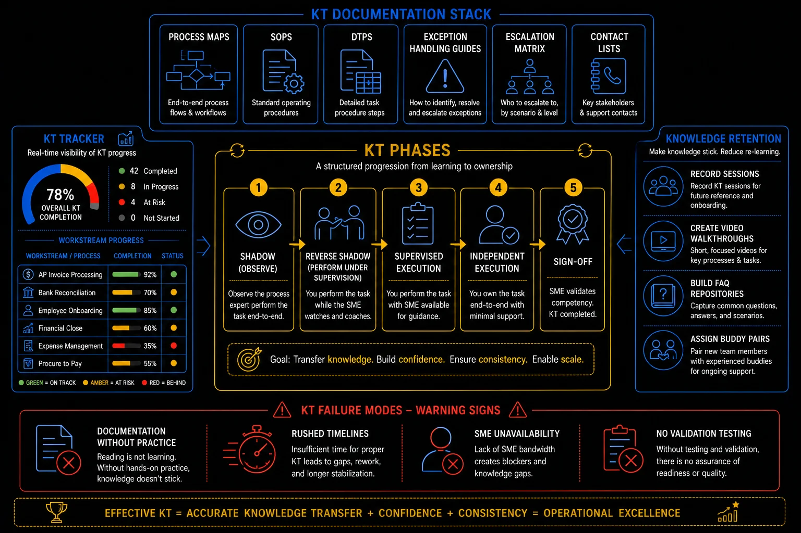

Pillar 10 · Cluster 2
Knowledge transfer execution in GBS transitions
Knowledge Transfer is the make-or-break phase of any GBS transition. The 4-phase model (Shadow, Reverse Shadow, Sign-off, Hypercare) provides the structure. Cultural resistance and incomplete documentation provide the obstacles.

Knowledge transfer — phases, documentation, tracking, and failure modes
Topic 01 · Methodology
The 4-phase KT model
Each phase has a specific purpose, defined exit criteria, and common failure modes. Skipping or compressing phases to meet deadlines is the leading cause of transition failure.
Phase 1 — Shadow
The receiving team observes the sending team performing the process in their normal environment. Purpose: understand the real process (not just the documented process), observe exception handling, and identify undocumented knowledge. Duration: 2-4 weeks. Exit criteria: receiving team can describe each process step, decision point, and system interaction from observation.
Phase 2 — Reverse Shadow
The receiving team performs the process while the sending team observes and corrects. Purpose: build hands-on competence under supervised conditions. Duration: 2-4 weeks. Exit criteria: receiving team can process standard cases independently with acceptable accuracy (typically 95%+).
Phase 3 — Handover / Independent Processing
The receiving team processes live transactions independently. The sending team is available for escalation but does not participate in daily processing. Purpose: prove operational capability. Duration: 2-4 weeks. Exit criteria: SLA targets met, error rate within acceptable range, escalation volume declining.
Phase 4 — Sign-off
Formal acceptance of the transition. The sending team confirms that the receiving team is meeting quality and timeliness standards. Service Acceptance Criteria (SAC) are formally signed. The sending team's involvement ends.
When timelines slip, the first thing leadership compresses is KT duration. "Can we do shadow and reverse shadow in one week instead of four?" The answer is technically yes and practically no. Compressed KT produces teams that can handle the happy path but fail on exceptions, edge cases, and month-end spikes. The errors show up 60-90 days later as audit findings and SLA breaches.
KT phases — shadow, reverse shadow, supervised, independent, sign-off
KT tracker — real-time visibility of completion by workstream
Topic 02 · People Challenges
Managing cultural resistance during transition
The sending team is losing their jobs or their scope. The receiving team is inheriting work they did not design. Both sides have reasons to resist — and the transition succeeds only when both are managed.
- Knowledge hoarding — withholding critical information to remain indispensable or delay the transition
- Passive non-cooperation — attending sessions but providing minimal engagement, vague answers, or incomplete documentation
- Active sabotage — rare but possible: providing incorrect information, overcomplicating explanations, or escalating problems to discredit the transition
- Legitimate grief — losing a role or team creates genuine emotional response that should be acknowledged, not dismissed
- Incentivize cooperation — retention bonuses, positive references, and redeployment support tied to successful knowledge transfer
- Create accountability — formal KT checklists signed off by both sides at each phase gate
- Document independently — have the receiving team document what they learn, not rely solely on sending team documentation
- Acknowledge the human cost — transitions affect real people; treating them with dignity is both ethical and practical for knowledge transfer quality
KT failure modes — documentation without practice, rushed timelines, SME unavailability
Topic 03 · Acceptance
Service Acceptance Criteria
SAC defines what "ready" means in measurable terms. Without it, go-live becomes a negotiation based on pressure and opinion rather than evidence.
- Volume handling — receiving team can process X% of expected volume within SLA
- Accuracy rate — error rate below Y% for standard transactions and Z% for complex cases
- Independence — escalation rate below threshold; receiving team resolves W% of cases without sending team support
- Documentation — all SOPs, exception guides, and decision trees updated and accessible
- System readiness — all access provisioned, tested, and confirmed; no pending IT tickets blocking operations
- Stakeholder acceptance — key business stakeholders confirm they are comfortable with service quality and responsiveness
- I have seen more transitions fail at KT than at any other phase. The pattern is always the same: business pressure to "just move faster," the incumbent checks out mentally once they know their role is transferring, and the receiving team signs off on readiness before they are actually ready. Protect your KT timeline — it is the cheapest insurance you will ever buy.
- The best KT is not a document handover — it is the reverse shadow phase where the receiving team does the work while the incumbent watches. That is where the undocumented exceptions, the workarounds, and the "oh, and also" knowledge surfaces. Every day you cut from reverse shadow costs you a week in hypercare.
Reference
Glossary
Full glossary at the GBS Insider Club Field Guide.
- SSON — Knowledge Transfer Framework for GBS transitions, 2025
- Deloitte — Shared Services Transition Playbook, 2024
- Everest Group — Transition Methodology Assessment, 2025
Knowing the frameworks is the entry ticket. Applying them — visibly, at your actual job — is what gets you promoted.
The GBS Insider Club Career Paths turn this theory into a guided 90-day program for your role: self-assessment, practical exercises, templates, and Julian's unfiltered practitioner playbook.
Explore the Career Paths → Back to GBS Transition